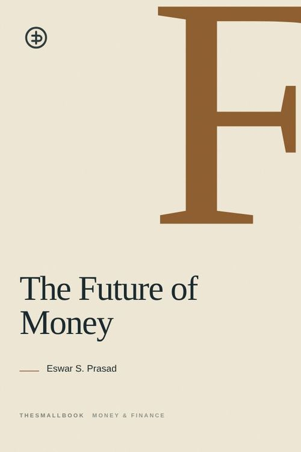

Library › Authors › Eswar S. Prasad
Books by Eswar S. Prasad
Eswar S. Prasad has one book in the library. Every book here is read down to the big idea, the lessons, the lines worth keeping and the actions worth taking. Start with the summary, then buy the full book if it earns a place on your shelf.

The Future of Money
2021 · 11 min · 8 lessons
Eswar Prasad explains how digital currencies, payment rails and crypto are reshaping money, and what central banks are about to change.
Prasad treats money as infrastructure with three jobs, unit of account, means of payment and store of value, and asks what happens when the plumbing is replaced. Mobile payments, stablecoins and central bank digital currencies solve real problems and create others, including exclusion, surveillance and the end of the privacy that cash gives.
Lessons in the summary
- What Money Does
- The Payment Revolution
- Crypto's Promise and Record
- Stablecoins and the Dollar
- Central Bank Digital Currency
- The Cash Problem
- Surveillance and Exclusion
- Who Decides
Lines worth keeping
- Money is plumbing, and plumbing decides who gets water.
- Cash protects the poor and the private, and it is disappearing.
- Whoever runs the payment rail sees the transaction.
Questions Eswar S. Prasad helps answer
Read nearby authors next
- Nassim Nicholas Taleb 4 books
- Morgan Housel 3 books
- Saurabh Mukherjea 3 books
- Tony Robbins 3 books
- Michael Lewis 2 books
- Raghuram Rajan 2 books
- Scott Galloway 2 books
- Abhijit V. Banerjee & Esther Duflo 1 book
Questions Eswar S. Prasad helps answer
Where should I start with Eswar S. Prasad? Start with The Future of Money: Eswar Prasad explains how digital currencies, payment rails and crypto are reshaping money, and what central banks are about to change.